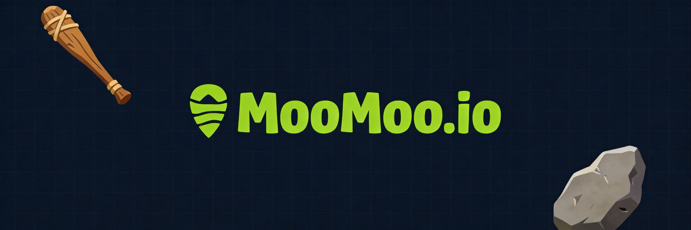

What is up, .io survivors! Everyone in the MooMoo.io community argues about the best way to dominate the server. Do you turtle up and build a massive shelter, or do you rush out and ransack villages for raw Gold? I’ve spent hundreds of hours testing every single approach across the Snow, Desert, and River biomes to see which playstyle actually gets you to the top of the leaderboard. I’m breaking down the data, the survival rates, and the raw efficiency of each strategy. If you want to stop dying in the first five minutes and start actually winning, you need to see this final ranking. Let’s dive in!
MooMoo.io in action
At a Glance
Rank
Name
Key Stats
Verdict
#1
The Fortress Builder — The Turtle King
Requires 100+ Wood and Stone to build a basic shelter. Reduces movemen...
Safe, but you’ll spend half the match playing a glorifi...
#2
The Village Raider — The Aggressor
Prioritizes Katana and Daggers for maximum burst damage. Kills yield i...
High risk, high reward, but one bad fight will complete...
#3
The Gold Farmer — The Grinder
Focuses purely on gathering pounds of raw Gold. Yields roughly 20 Gold...
Mathematically optimal for gear, but incredibly boring ...
#4
The Biome Explorer — The Nomad
Traverses Snow, Desert, and River biomes. Consumes 1 Food unit every 1...
Great for avoiding early deaths, but you’ll wander aiml...
The Contenders
The Fortress Builder — The Turtle King
Requires 100+ Wood and Stone to build a basic shelter. Reduces movement speed to near zero once enclosed, but provides 100% damage mitigation against early-game weapons.
✓ The Fortress Builder is all about absolute safety and map control. By stacking walls and spike traps, you create an impenetrable zone that forces enemies to waste their weapons breaking in. This playstyle shines in the late game when you have enough resources to build a massive compound. It completely negates the threat of early-game rushers and gives you a safe haven to heal and store your gathered Food. When you’re sitting inside a fully upgraded shelter, you can comfortably farm the surrounding area without looking over your shoulder, making it the ultimate choice for players who hate cheap deaths.
✗ The massive downside here is the early-game vulnerability. While you’re busy chopping trees and mining stone to build your base, you have zero offensive pressure and limited mobility. Aggressive players with Katana or Daggers will easily run you down before your walls are even up. Furthermore, once you lock yourself inside, you become a sitting duck if someone brings a Turret or traps you with structures of their own. You also miss out on early map control, letting other players secure the best Gold spawns and Food sources while you’re stuck playing Minecraft.
Safe, but you’ll spend half the match playing a glorified construction simulator.
The Village Raider — The Aggressor
Prioritizes Katana and Daggers for maximum burst damage. Kills yield immediate resource drops, but requires spending 30% of your time farming Food to maintain health.
✓ The Village Raider thrives on chaos and immediate resource generation. By constantly attacking other players and ransacking their villages, you bypass the tedious early-game grinding entirely. Every successful hit with a Katana or Dagger swarm not only deals massive damage but also steals their hard-earned Gold and Food. This playstyle is incredibly snowball-heavy; if you get an early kill, you can instantly upgrade your gear and dominate the mid-game. It’s perfect for players who want to control the pace of the match, force enemies to play defensively, and keep the pressure on so they never have time to build up.
✗ The biggest flaw is the extreme risk-to-reward ratio. If you misjudge a fight or run into a fully built Fortress Builder, you will get shredded by their traps and lose all your momentum. You also have to constantly manage your health, meaning you need to spend time farming Food instead of fighting. Against players who know how to kite or use ranged weapons, the Raider struggles to close the gap. It’s a high-stress playstyle that requires constant map awareness; one bad rotation into a Snow biome without enough Food, or a bad ambush, and your entire run is over instantly.
High risk, high reward, but one bad fight will completely ruin your entire match.
How they stack up
The Gold Farmer — The Grinder
Focuses purely on gathering pounds of raw Gold. Yields roughly 20 Gold per minute in safe zones, but increases your vulnerability to ambushes by 80% due to zero defensive structures.
✓ The Gold Farmer is the most mathematically efficient way to reach the top of the leaderboard. By ignoring PvP and focusing entirely on gathering pounds of raw Gold in safe, overlooked areas of the map, you guarantee a steady, uninterrupted income. This playstyle allows you to unlock the best weapons and structures much faster than anyone else. It completely removes the stress of combat, letting you focus purely on resource management and route optimization. When you finally do decide to engage, you’ll be fully maxed out while the Raiders are still fighting over scraps, giving you a massive statistical advantage in any late-game encounter.
✗ The problem is that MooMoo.io is a survival sandbox, not an idle clicker. While you’re grinding Gold in the corners of the map, the Village Raiders are actively denying you resources and taking control of the best biomes. If a Raider targets you, your lack of combat practice means you’ll likely panic and die, losing all your hard-earned Gold. You also miss out on the map control that comes with fighting, meaning you might get boxed in by Fortresses and have nowhere left to farm. It’s a boring, repetitive playstyle that falls apart the moment someone decides to hunt you down.
Mathematically optimal for gear, but incredibly boring and completely defenseless against aggression.
The Biome Explorer — The Nomad
Traverses Snow, Desert, and River biomes. Consumes 1 Food unit every 15 seconds to survive environmental hazards, but reduces enemy encounter rates by 60%.
✓ The Biome Explorer leverages the game’s diverse environments to stay alive and gather unique resources. Surviving in the rough Snow, Desert, or River biomes is not an easy feat, but mastering them gives you access to areas where other players are too scared to go. This playstyle excels at map mobility and avoiding the heavily contested central zones. By constantly moving and adapting to different environmental challenges, you stay unpredictable and hard to track. It’s an excellent way to gather Food and resources without the constant threat of being ambushed by a fully geared Village Raider, allowing you to scale your gear at a comfortable, sustainable pace.
✗ The environmental hazards in the Snow and Desert biomes will drain your Food and health rapidly if you aren’t perfectly prepared. You spend a massive amount of time just trying to survive the elements rather than actually progressing your base or gear. When you finally return to the safer central zones, you’ll find that the Fortresses and Raiders have already claimed all the best spots. The Nomad playstyle also lacks a definitive end-game plan; you’re just wandering around surviving, which makes it incredibly difficult to accumulate the massive amounts of Gold needed to actually hit number one on the leaderboard.
Great for avoiding early deaths, but you’ll wander aimlessly while others actually win the game.
The Rankings
#1 The Fortress BuilderRank 1 of 4
#2 The Village RaiderRank 2 of 4
#3 The Gold FarmerRank 3 of 4
#4 The Biome ExplorerRank 4 of 4
Alright, let’s get to the definitive ranking from worst to best. At number four, we have The Biome Explorer. It’s a fun gimmick for avoiding early deaths, but you’ll just wander aimlessly while everyone else actually wins the game. Number three is The Gold Farmer. I know the math nerds love this, but it’s incredibly boring and leaves you completely defenseless when a Raider inevitably hunts you down. At number two, we have The Fortress Builder. Turtling is safe, but you spend half the match playing a glorified construction simulator and miss out on the actual gameplay loop. That leaves number one: The Village Raider. Yes, it’s high risk, but MooMoo.io is a combat sandbox. Ransacking villages and stealing Gold is the only way to truly dominate the server.
Who Should Pick What
If you're a beginner
Go Fortress Builder
Building a shelter gives you a safe space to learn the controls and understand resource management without the constant stress of getting instantly killed by aggressive veterans.
If you love aggression
Pick Village Raider
Ransacking villages and using weapons like the Katana lets you snowball your gear instantly. It’s the fastest way to climb the leaderboard if you have the mechanical skill.
If you play defensively
Try Gold Farmer
Focusing purely on gathering raw Gold in safe zones lets you max out your weapons and structures without ever having to engage in a stressful, chaotic PvP fight.
If you hate camping
Go Biome Explorer
Traversing the Snow, Desert, and River biomes keeps you constantly moving. It’s perfect for players who get bored easily and want to explore the entire map.

The final verdict in action
The Bottom Line
At the end of the day, The Village Raider is the undisputed best playstyle in MooMoo.io. Surviving in the rough biomes and building shelters is fun, but this game is ultimately about ransacking villages and rising to the top of the leaderboard by gathering pounds of raw Gold. You can’t get that Gold efficiently by hiding in a base or wandering the desert. You have to take it from other players. The Raider playstyle forces the action, snowballs your gear, and keeps you in complete control of the match. Stop playing it safe, grab a Katana, and start raiding.
Our Verdict
Moomoo.io brilliantly bridges the gap between mindless .io combat and deep survival crafting, making every match feel like a tense session of Age of Empires mixed with a battle royale. The windmill economy and tribal alliances add a layer of strategic depth that keeps you grinding for hours, even if solo players will eventually get bullied by organized clans. It's an absolute must-play for anyone who wants more than just bumping into other players.
★★★★☆4/5
Similar Games You Might Enjoy
Taming.io — Offers a similar survival crafting and PvP experience with the added twist of taming and riding animals to gather resources.
Starve.io — Focuses heavily on survival mechanics like hunger and temperature while maintaining the competitive .io base-building loop.
Zombs.io — A great alternative if you prefer the base-building and resource management aspects of Moomoo with a heavier emphasis on tower defense.
How It Compares
Game
Difficulty
Learning Curve
Player Base
Best For
Moomoo.io
★★★☆☆
Moderate
Large
Strategic base-builders
Taming.io
★★★☆☆
Moderate
Medium
Survival & animal lovers
Starve.io
★★★★☆
Steep
Medium
Hardcore survival fans
Zombs.io
★★☆☆☆
Easy
Medium
Casual tower defense
Common Mistakes New Players Make
Spending all your early wood on basic walls instead of building a Windmill. → Always prioritize building a Windmill first, as its passive gold generation is the only way to afford armor, weapons, and advanced upgrades.
Leaving your Windmill unprotected in the open. → Immediately surround your Windmill with Spike Walls to deter attackers and force them to take damage before reaching your income source.
Ignoring the Tribe system and trying to survive solo in the late game. → Join or form a Tribe early via chat to share territory, coordinate defenses, and protect each other from organized clan groups.
Abandoning your base and resources when relocating instead of using the Hammer. → Press 'Q' to switch to your Hammer and break down your own structures to refund the wood and stone before moving to a new spot.